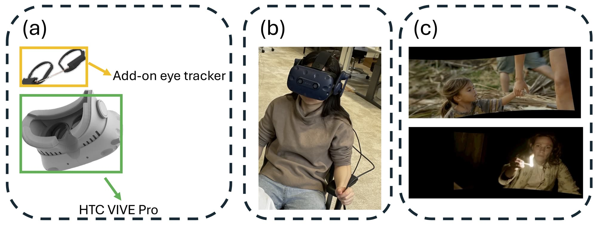

ACM IMWUT · Vol. 9, No. 3, Article 143 · September 2025
Through the Eyes of Emotion: A Multi-faceted Eye Tracking Dataset for Emotion Recognition in Virtual Reality
1Delft University of Technology · 2University of Stuttgart · †equal contribution
- 26 participants
- 28 video stimuli
- 7 emotions
- 120 fps periocular video
- 240 Hz gaze
- 120 Hz pupil diameter

Abstract
Virtual Reality (VR) is transforming cognitive and psychological research by enabling immersive simulations that elicit authentic emotional responses. The high demand for VR-based emotion recognition is also evident in fields such as mental healthcare, education, and entertainment, where understanding users' emotional states can enhance user experience and system effectiveness. However, the lack of comprehensive datasets hinders progress in VR-based emotion recognition. In this paper, we present a comprehensive, multi-faceted eye-tracking dataset collected from 26 participants using 28 emotional video stimuli rendered in a custom virtual environment. Our dataset is the first to incorporate high-frame-rate periocular videos, capturing subtle motions, such as micro-expressions and eyebrow shifts, which are critical for emotion analysis. Additionally, it includes high-frequency eye-tracking data, offering gaze direction and pupil dynamics at four times the frequency of existing datasets. Our dataset is also unique in providing emotion annotations according to Ekman's emotion model and, as such, offering experiments impossible using existing datasets. Our benchmark evaluations show that fusing the multi-faceted eye-tracking signals in our dataset significantly improves emotion recognition accuracy. As such, our work has the potential to significantly accelerate and enable entirely new research on emotion-aware VR applications.
What's in the dataset
Each of the 26 participants watched 14 emotional film clips (two per emotion, drawn from a 28-clip stimulus pool validated by Zupan et al.) inside a custom Unity VR environment on an HTC VIVE Pro with a Pupil Labs eye-tracking add-on. Every session is recorded across synchronized modalities:
The dataset ships in both raw and processed (training-ready HDF5) form, together with the open-source Unity recording interface, the annotation toolchain, and reference preprocessing and benchmark code. File-level documentation lives in the GitHub repository.
Example recordings
Field of view with the gaze estimate overlaid on the stimulus, alongside the two periocular recordings with pupil measurements overlaid.
Dataset access
The dataset contains recordings of human participants, so it is not available for direct download. Access is granted to researchers after a short review. Three steps:
-
Complete the Dataset Access Request Form
Tell us who you are, your institution, and how you plan to use the data.
Open the request form -
Sign the Data Use and Confidentiality Agreement
The agreement covers research-only use, no redistribution, and no attempts to identify participants.
Open the agreement -
Receive the download link by email
We review each request and email the download instructions to your institutional address once your request is approved.
Please use an institutional email address — the download link is sent there after review. The dataset is provided for non-commercial research and educational purposes only, under the terms of the agreement.
License
The paper is published under a CC BY-NC 4.0 license and the code under the MIT license. The dataset itself is distributed under the terms of the Data Use and Confidentiality Agreement above.
Citation
If the dataset or tools help your research, please cite:
@article{yang2025VREyeEmotion,
title = {Through the Eyes of Emotion: A Multi-faceted Eye Tracking Dataset
for Emotion Recognition in Virtual Reality},
author = {Yang, Tongyun and Regmi, Bishwas and Du, Lingyu and
Bulling, Andreas and Zhang, Xucong and Lan, Guohao},
journal = {Proceedings of the ACM on Interactive, Mobile, Wearable and
Ubiquitous Technologies},
volume = {9},
number = {3},
articleno = {143},
year = {2025},
publisher = {Association for Computing Machinery},
doi = {10.1145/3749545}
}Contact
Questions about the dataset, the tools, or an access request:
- Tongyun Yang — tongyunyang [at] outlook.com
- Guohao Lan — g.lan [at] tudelft.nl
Acknowledgements
This work was supported in part by the Meta Research Award, SURF Research Cloud grant EINF-6360, and the EU's Horizon Europe HarmonicAI project under the HORIZON MSCA-2022-SE-01 scheme, grant agreement 101131117. The contents of this page do not necessarily reflect the positions or policies of the funding agencies.